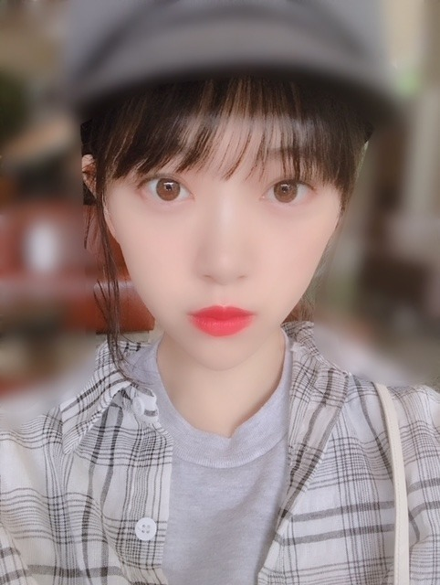
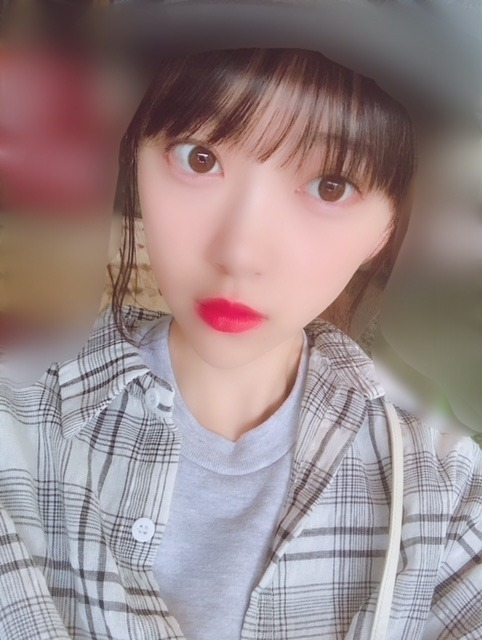

2018/0916Sun雲
雲の形をみるのが好きなのですが
秋って夏の雲をぼかしたような形だな〜って
思いながら最近は雲を見ています
きっと夏よりも柔らかく
優しいのが秋なんだと思う
秋は生まれ月っていうのもあるけど
胃にも優しいし目にも肌にも優しいので
個人的には大好きです

最近観た映画は
"SUNNY 強い気持ち・強い愛"と
"寝ても覚めても"
SUNNYは
たくさん泣いたし、笑ったし
キャストの皆さんが本当に個性豊かで
観て良かったです
友達に辛いことがあったとき、
自分のこと以上に辛く苦しくなる気持ちに
凄く共感しました
いつもそばにいてくれたからこそ
守りたいっていう思いが強くなる
寝ても覚めてもは
唐田えりかさんの
ナチュラルな関西弁に
ずっときゅんきゅんしてました
時間の流れがゆったりに感じつつも
起こっている出来事は衝撃の連続...
恋はその人だけのもので、特別で
だからいろんなドラマがあって
面白いんだなーと思いました
月に3本以上は観れてるけど
まだまだ時間が足りません。。
月に3本以上は観れてるけど
まだまだ時間が足りません。。
実は、SUNNYは絢音と観たんです
そのままオフを一緒に過ごしたんだけど
初期の頃行ってたご飯屋さんに行ったり
映画観たりお買い物したり
ずっとずっと話が尽きなくて
めっちゃ、楽しかったです
なんでも話せる上に
気も使わないし
笑いのツボも同じで
いつも支えられっぱなしだから
私もたまには絢音の支えになれたらいいな
ありがとう！
ありがとう！

diorの新作ルージュがお気に入り
風も食べ物も植物も服もメイクも
すっかり秋ですね
すっかり秋ですね

最近はラベンダー色の
ニットカーディガンを買いました
発売中の ar
9/21発売の platinum FLASH
よろしくお願いします！
挑戦や新しいことや試練や課題って
怖さもあるけど
でも絶対に絶対に
楽しいことだと思う
だって新たな景色や自分を
発見できる絶好な機会だもん
楽しいことは楽しむべき！


じゃね。
2018/09/16 15:06
コメント(420)
更新ありがとう！
しゃがんでパンパンのごみ袋、縛ってたらビニール紐が切れて、親指の爪が鼻に当たった昨日。
赤く腫れ切れてます！
堀ちゃんの目茶色でキレイだね！口紅が秋らしく控えめな感じで、かわいいよ！ 髪型が全部、好みなので保存しました！ 後ろで、まとめると首もと見えるから女性らしさが出て好きです！髪の間から見える耳！ 前髪！ 帽子ー！
秋服、良いじゃん！ 次は何かな？ ダジャレ言って笑わしたい。
みり愛ちゃんとの写真は良いね！
じゃあ！次、待ってるで。
じゃあ。は、さみしいです。
笑顔になあれ！応援してます！
しゃがんでパンパンのごみ袋、縛ってたらビニール紐が切れて、親指の爪が鼻に当たった昨日。
赤く腫れ切れてます！
堀ちゃんの目茶色でキレイだね！口紅が秋らしく控えめな感じで、かわいいよ！ 髪型が全部、好みなので保存しました！ 後ろで、まとめると首もと見えるから女性らしさが出て好きです！髪の間から見える耳！ 前髪！ 帽子ー！
秋服、良いじゃん！ 次は何かな？ ダジャレ言って笑わしたい。
みり愛ちゃんとの写真は良いね！
じゃあ！次、待ってるで。
じゃあ。は、さみしいです。
笑顔になあれ！応援してます！
秋は胃に優しい。確かに！魚とキノコとお米の時期だからね。日本人にはあってるのかね。笑
やぁ(・∀・)ノ未央奈ちゃん♡こんばんは！
りょーへー(R.N.イナダウアーびーむ)だよ♪
メールのお写真、かわいすぎませんか！！！未央奈ちゃんはいつでも可愛くて大好きだけど、このお写真の未央奈ちゃん、めっちゃ好き！
早寝早起き、俺もしたいなって思う！最近は、夜遅くまで予定が入っていることが多くて、その流れで早起きも出来てないけど…！早起きって、お得感もあるよね！時間がたっぷりあるし！早寝早起き、したい！！！
あ、でもね、最近、朝の早い時間に起きてることはある！夜勤バイト終わりとか、夜行バスで帰って来たとか、夜通し作業してたとか！まぁ、早起きとは違うから、朝日を見てから、眠りにつくんだけどね！笑
#毎日コメント
#今日もお疲れ様
#お月様
#綺麗だなぁ
#雲に隠れたり
#出てきたり
#人の心を
#動かせる人になりたい
#明日も楽しみおな♡
#おやすみおな(。-∀-)
りょーへー(R.N.イナダウアーびーむ)だよ♪
メールのお写真、かわいすぎませんか！！！未央奈ちゃんはいつでも可愛くて大好きだけど、このお写真の未央奈ちゃん、めっちゃ好き！
早寝早起き、俺もしたいなって思う！最近は、夜遅くまで予定が入っていることが多くて、その流れで早起きも出来てないけど…！早起きって、お得感もあるよね！時間がたっぷりあるし！早寝早起き、したい！！！
あ、でもね、最近、朝の早い時間に起きてることはある！夜勤バイト終わりとか、夜行バスで帰って来たとか、夜通し作業してたとか！まぁ、早起きとは違うから、朝日を見てから、眠りにつくんだけどね！笑
#毎日コメント
#今日もお疲れ様
#お月様
#綺麗だなぁ
#雲に隠れたり
#出てきたり
#人の心を
#動かせる人になりたい
#明日も楽しみおな♡
#おやすみおな(。-∀-)
可愛い
新しいことに挑戦することや試練などはほんと怖い事ですよね。でもそれを乗り越えられたらまた新たな自分を発見できるし楽しいことも待ってるはずだから前向きに進んでいってほしいです!
そんな堀ちゃんを応援してます!!
そんな堀ちゃんを応援してます!!
1枚目の写真の景色
僕も最近その景色の写真を撮ったのでブログにあってびっくりしました(°д°)
未央奈ちゃん可愛い写真ありがとう！
僕も最近その景色の写真を撮ったのでブログにあってびっくりしました(°д°)
未央奈ちゃん可愛い写真ありがとう！
相変わらずプリン会で仲よさそうでプリン会推しの私得です笑笑
かわいすぎる、！！！
私も映画みたいなあ〜〜
かわいすぎる、！！！
私も映画みたいなあ〜〜
ぼくも最近映画を観ました！
響 という映画を観ました！
欅坂の平手ちゃんが主演なのですが、
ぼくは全然原作を読まずに、知識なしで観に行ったのですが、
本当に面白かったし、気づいたらのめり込んで観入っていました（笑）
これを機に原作読んでみようって思いました！
あと、ぼくも雲を見ることが大好きなんです！
本当に大好きで、自分は特に夏の雲が好きです！
積乱雲っていう雲があるんですけど、それは一般でいう雷雲のことなんですけどそれを観察するのが大好きなんです（笑）
雷が、ビビっと落ちる瞬間、稲光を観察するのが大好きで、
夏になると必ず観察します！
響 という映画を観ました！
欅坂の平手ちゃんが主演なのですが、
ぼくは全然原作を読まずに、知識なしで観に行ったのですが、
本当に面白かったし、気づいたらのめり込んで観入っていました（笑）
これを機に原作読んでみようって思いました！
あと、ぼくも雲を見ることが大好きなんです！
本当に大好きで、自分は特に夏の雲が好きです！
積乱雲っていう雲があるんですけど、それは一般でいう雷雲のことなんですけどそれを観察するのが大好きなんです（笑）
雷が、ビビっと落ちる瞬間、稲光を観察するのが大好きで、
夏になると必ず観察します！
「プーと大人になった僕」も面白かったよ
こんばんは
私も秋の生まれ月です。
秋、最高♪
雲が高い！
青春の絆。
恋かぁ...したい。
映画って本当にいいものですね◎
私は、年に最高14回、映画館に観に行ったことがあります
もっと観に行きたい。。
1日では、連続2回！
未央奈さんに気を使わないって言われた
絢音さんは嬉しいだろうなぁ♪
私が、友達に言われたことがあるので！
その人の前で素で居られるってことは
お互い信頼関係があるってことだから(^-^)
そうやって言える未央奈さんは
素敵です！
新作ルージュ、似合ってます♡
かわいい(^-^)
最後の言葉、同感です！
ほんとに未央奈さんは、
絢音さんとみり愛さんと仲良いですね♪
素敵な言葉、写真、ありがとう◎
雲のように自由に生きたいなぁ...
おやすみなさい
またね。
私も秋の生まれ月です。
秋、最高♪
雲が高い！
青春の絆。
恋かぁ...したい。
映画って本当にいいものですね◎
私は、年に最高14回、映画館に観に行ったことがあります
もっと観に行きたい。。
1日では、連続2回！
未央奈さんに気を使わないって言われた
絢音さんは嬉しいだろうなぁ♪
私が、友達に言われたことがあるので！
その人の前で素で居られるってことは
お互い信頼関係があるってことだから(^-^)
そうやって言える未央奈さんは
素敵です！
新作ルージュ、似合ってます♡
かわいい(^-^)
最後の言葉、同感です！
ほんとに未央奈さんは、
絢音さんとみり愛さんと仲良いですね♪
素敵な言葉、写真、ありがとう◎
雲のように自由に生きたいなぁ...
おやすみなさい
またね。
未央奈と絢音ちゃんはお互いに支え、支えられている
とてもいい関係だと思うよ。
ジコチューで行こうでは５年越しの約束も叶ったし、次回は絢音ちゃんも福神に入っていつかは未央奈と絢音ちゃんのダブルセンターを表題曲で見てみたい。
俺も未央奈と絢音ちゃんのような関係のチームメイトがチームにいたら…（泣）
とてもいい関係だと思うよ。
ジコチューで行こうでは５年越しの約束も叶ったし、次回は絢音ちゃんも福神に入っていつかは未央奈と絢音ちゃんのダブルセンターを表題曲で見てみたい。
俺も未央奈と絢音ちゃんのような関係のチームメイトがチームにいたら…（泣）
雲いいですよねー
見てて穏やかな気持ちになります
これからも頑張ってね
見てて穏やかな気持ちになります
これからも頑張ってね
こんばんは。
最後の写真は、どこかへのロケハン移動中なんですかね？
未央奈さんのふとした表情に、惹かれる写真の例だと思います。
堀ちゃんブログありがとー。
今日は疲れました
今日は疲れました
未央奈は未央奈らしくだよね～(´ω｀)
雲綺麗ですね❗
これからもお仕事頑張って‼️
応援してます❗
これからもお仕事頑張って‼️
応援してます❗
仲良しの同期いいね！
写真オシャレだなーー(・Д・ )
写真オシャレだなーー(・Д・ )
写真の堀ちゃんかわいすぎる(;_;)
堀ちゃんの誕生月に入ってもう３日になりました☆
今年は夏が異様に暑かった分、この風の涼しさが例年以上に肌寒く感じています☆
映画は、映画館で観たい作品がいくつかあるので、上映期間に気を付けながら１つずつ観たいと思います☆
絶対、『MEG ザ・モンスター』は映画館で観ないとなとは思っていますが、実現するかな(;'∀')
いや、朝一の回(2D上映)があったから行ってこいって感じだけど、あの迫力は3D上映で体験してみたいから時間を調べて移動先でも行けるようにしておきます☆
『コーヒーが冷めないうちに』電車の車内広告で小説の宣伝は見ていて、その小説をうちの母が気になったらしく読んでいて、そして映画化という事で共通の話題になったので、この作品はうちの親を誘って観に行きたいなって思っています☆
『ザ・プレデター』はレンタルで観ます☆
つい先日、『新感染 ファイナル・エクスプレス』をテレビで観て、ただのゾンビ映画じゃないって知って観ながら涙していました。
人の優しさ、家族の温かさ、友達との友情、勿論、人間の醜さや集団心理、不安や恐怖からくるものだったり、生き残りたいが為の行動だったとしても、観ていて心がね。
人間ドラマの溢れる作品で面白かったです。
ただ、何でこの人が死ななきゃいけないんだよってショックなシーンがあったのと、こいつら追いかけてくる速さがとんでもないなというショックはありました☆
『あさひなぐ』も映画版が同じ日に放送してたので観ました☆
その何日か前に舞台版の『あさひなぐ』も買ったBlu-rayを家で観ていたので、同じ作品を違うキャストさんで演じられてるし、シーンも全く同じってわけじゃないけど、記憶が鮮明だったので比較しながら観てしまいました☆
どっちが良かったって感想はなく。
舞台版は、それぞれの役にスポットライトが当たるから、そのキャラクターとかが細かく紹介されていて、そういう部分は観ていて面白かったし、この役はこういう性格をしていてこの部分凄く魅力的だなって感じられるシーンもあったりして入り込みやすかったです☆
逆に映画版は、映像作品だから説明的な表現やシーンはカットしていて、そういう部分ではそれぞれのキャストのキャラクターの表現の仕方に任せていて、テンポとか笑えるシーンとか良くて一つの作品を観る分には楽しめました☆
映画版で少し残念だったのが、真春と寧々の人間臭さが見られるシーンが舞台版と違って削がれていた為、旭から真春への憧れがさらっとした感じで流れてしまったように感じられたのと、寧々のいつもきついけど、それは真っ直ぐな性格と不器用な性格からきてるだけで、今までそうしてきたから他のやり方や他者との接し方を知らないっていうだけじゃないと感じた部分が、舞台版では感じられたのに、映画版ではきついけど性格がまだ子供でっていう感じで収まっていたのが、十分だけど物足りなかったなって感じました☆
でも、舞台上ではステージの広さがあるから転落の危険がある分一定以上は激しく動けないし、万が一飛んでいく危険があるから薙刀をそこまで速く扱わないとか、舞台の演出上、どの角度からもわかりやすくする為って理由もあったと思うけど、試合のシーンの迫力は映画版にもっていかれちゃうよね☆
でも、それは迫力の部分だけであって、試合のシーンや合宿の稽古のシーンが良くなかったってわけではございません☆
堀ちゃんの寧々が言う『雑魚の中でも一番強い雑魚とやらんと意味なかでしょ』が初めて聞いた時の衝撃もあったけど、結構好き(*´ω｀*)
そして、『あんた何番目？他の連中はどうでもよか』の言い方とかとかも好き(*'▽')ﾉ
あの、寧々が寒河江先輩から隠れて林か森で迷子になって旭と言い争いして、最後に的林から想いを伝えられるシーンまでの一連のシーンが本当に良いよね☆
グッとくるシーンは結構あるんだけど、好き(#^.^#)
一旦、ここまで☆
慶次郎でした。
今年は夏が異様に暑かった分、この風の涼しさが例年以上に肌寒く感じています☆
映画は、映画館で観たい作品がいくつかあるので、上映期間に気を付けながら１つずつ観たいと思います☆
絶対、『MEG ザ・モンスター』は映画館で観ないとなとは思っていますが、実現するかな(;'∀')
いや、朝一の回(2D上映)があったから行ってこいって感じだけど、あの迫力は3D上映で体験してみたいから時間を調べて移動先でも行けるようにしておきます☆
『コーヒーが冷めないうちに』電車の車内広告で小説の宣伝は見ていて、その小説をうちの母が気になったらしく読んでいて、そして映画化という事で共通の話題になったので、この作品はうちの親を誘って観に行きたいなって思っています☆
『ザ・プレデター』はレンタルで観ます☆
つい先日、『新感染 ファイナル・エクスプレス』をテレビで観て、ただのゾンビ映画じゃないって知って観ながら涙していました。
人の優しさ、家族の温かさ、友達との友情、勿論、人間の醜さや集団心理、不安や恐怖からくるものだったり、生き残りたいが為の行動だったとしても、観ていて心がね。
人間ドラマの溢れる作品で面白かったです。
ただ、何でこの人が死ななきゃいけないんだよってショックなシーンがあったのと、こいつら追いかけてくる速さがとんでもないなというショックはありました☆
『あさひなぐ』も映画版が同じ日に放送してたので観ました☆
その何日か前に舞台版の『あさひなぐ』も買ったBlu-rayを家で観ていたので、同じ作品を違うキャストさんで演じられてるし、シーンも全く同じってわけじゃないけど、記憶が鮮明だったので比較しながら観てしまいました☆
どっちが良かったって感想はなく。
舞台版は、それぞれの役にスポットライトが当たるから、そのキャラクターとかが細かく紹介されていて、そういう部分は観ていて面白かったし、この役はこういう性格をしていてこの部分凄く魅力的だなって感じられるシーンもあったりして入り込みやすかったです☆
逆に映画版は、映像作品だから説明的な表現やシーンはカットしていて、そういう部分ではそれぞれのキャストのキャラクターの表現の仕方に任せていて、テンポとか笑えるシーンとか良くて一つの作品を観る分には楽しめました☆
映画版で少し残念だったのが、真春と寧々の人間臭さが見られるシーンが舞台版と違って削がれていた為、旭から真春への憧れがさらっとした感じで流れてしまったように感じられたのと、寧々のいつもきついけど、それは真っ直ぐな性格と不器用な性格からきてるだけで、今までそうしてきたから他のやり方や他者との接し方を知らないっていうだけじゃないと感じた部分が、舞台版では感じられたのに、映画版ではきついけど性格がまだ子供でっていう感じで収まっていたのが、十分だけど物足りなかったなって感じました☆
でも、舞台上ではステージの広さがあるから転落の危険がある分一定以上は激しく動けないし、万が一飛んでいく危険があるから薙刀をそこまで速く扱わないとか、舞台の演出上、どの角度からもわかりやすくする為って理由もあったと思うけど、試合のシーンの迫力は映画版にもっていかれちゃうよね☆
でも、それは迫力の部分だけであって、試合のシーンや合宿の稽古のシーンが良くなかったってわけではございません☆
堀ちゃんの寧々が言う『雑魚の中でも一番強い雑魚とやらんと意味なかでしょ』が初めて聞いた時の衝撃もあったけど、結構好き(*´ω｀*)
そして、『あんた何番目？他の連中はどうでもよか』の言い方とかとかも好き(*'▽')ﾉ
あの、寧々が寒河江先輩から隠れて林か森で迷子になって旭と言い争いして、最後に的林から想いを伝えられるシーンまでの一連のシーンが本当に良いよね☆
グッとくるシーンは結構あるんだけど、好き(#^.^#)
一旦、ここまで☆
慶次郎でした。


秋の雲は高い所にありますね。
ガルアワやMステでは不在でしたね！？
静養中かお仕事なら良いのですが...
当たり前が当たり前でなくなると、
やっぱりやるせなくなるものです...
青空が青空に感じられない自分が居ます！
みおちゃんの存在はとっても大きいです☆
また、飛びっきりの笑顔を見せて下さいね☺